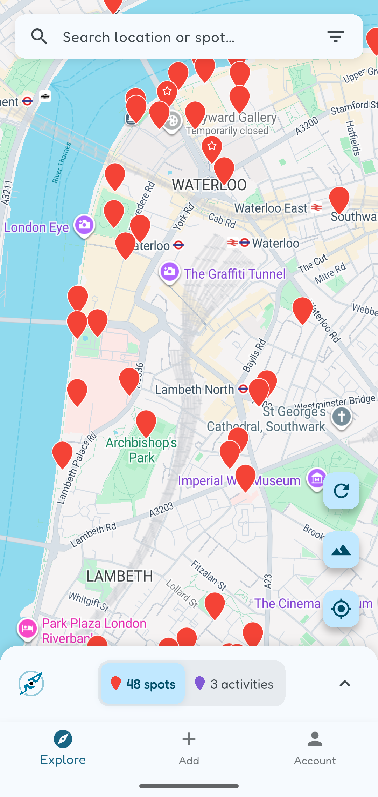

<!doctype html>
<html lang="en">
<head>
<meta charset="utf-8">
<title>Store frame</title>
<link rel="preconnect" href="https://fonts.googleapis.com">
<link href="https://fonts.googleapis.com/css2?family=Fredoka:wght@400;500;600&display=block" rel="stylesheet">
<script src="https://cdn.jsdelivr.net/npm/d3@7.9.0/dist/d3.min.js"></script>
<style>
  :root {
    --primary: #186584;
    --primary-deep: #0f4f69;
    --on-primary: #ffffff;
    --mist: #c1e8ff;
    --ink: #171c1f;
  }
  * { margin: 0; padding: 0; box-sizing: border-box; }
  html, body { background: var(--primary); overflow: hidden; }
  body { font-family: "Fredoka", system-ui, sans-serif; color: var(--on-primary); }

  .frame { position: relative; width: 1080px; height: 1920px; overflow: hidden;
           background: radial-gradient(120% 70% at 20% 0%, #1d7395 0%, var(--primary) 45%, var(--primary-deep) 100%); }
  .contours { position: absolute; inset: 0; }

  .copy { position: absolute; left: 88px; right: 88px; top: 132px; }
  h1 { font-weight: 600; font-size: 92px; line-height: 1.04; letter-spacing: -0.015em; text-wrap: balance; }
  p  { margin-top: 28px; font-weight: 400; font-size: 42px; line-height: 1.3; color: var(--mist); text-wrap: pretty; max-width: 860px; }

  .shot { position: absolute; left: 50%; width: 860px; transform: translateX(-50%);
          border-radius: 40px; overflow: hidden;
          box-shadow: 0 2px 0 1px rgba(255,255,255,.18), 0 40px 80px -10px rgba(0,25,38,.55), 0 12px 24px rgba(0,25,38,.25); }
  .shot img { display: block; width: 100%; }

  /* Feature graphic 1024x500 */
  .feature { position: relative; width: 1024px; height: 500px; overflow: hidden;
             background: radial-gradient(90% 120% at 15% 10%, #1d7395 0%, var(--primary) 50%, var(--primary-deep) 100%); }
  .feature .brand { position: absolute; left: 64px; top: 50%; transform: translateY(-50%); width: 520px; }
  .feature .brand img { width: 100%; display: block; }
  .feature .brand p { font-size: 34px; margin-top: 26px; color: var(--mist); }
  .feature .phone { position: absolute; right: 120px; top: 100px; width: 310px; border-radius: 16px; overflow: hidden;
                    transform: rotate(-7deg); transform-origin: top left;
                    box-shadow: 0 2px 0 1px rgba(255,255,255,.18), 0 30px 60px -8px rgba(0,25,38,.6); }
  .feature .phone img { width: 100%; display: block; }
</style>
</head>
<body>
<div id="root"></div>
<script>
const FRAMES = [
  { src: "map2",       h: "Find parkour spots near you",     p: "Free and open. No account needed to explore." },
  { src: "detail_top", h: "See the spot before you go",      p: "Photos and ratings from people who train there" },
  { src: "nl_events",  h: "Never miss a jam",                p: "Jams, workshops and comps, right on the map" },
  { src: "detail_mid", h: "Know what's waiting for you",     p: "Features, access and what each spot is good for" },
  { src: "nl",         h: "Plan your next spot trip",        p: "Spots and events across cities and countries" },
  { src: "filter",     h: "Rainy day? Find covered spots",   p: "Filter by access, facilities and photos" },
  { src: "addhub",     h: "Put your spot on the map",        p: "Add spots and events for everyone to find" },
];

// Deterministic gradient noise (Perlin-style) so the contour field is identical on every render.
function makeNoise(seed) {
  const perm = new Uint8Array(512); const p = [...Array(256).keys()];
  let s = seed; const rnd = () => (s = (s * 16807) % 2147483647) / 2147483647;
  for (let i = 255; i > 0; i--) { const j = Math.floor(rnd() * (i + 1)); [p[i], p[j]] = [p[j], p[i]]; }
  for (let i = 0; i < 512; i++) perm[i] = p[i & 255];
  const fade = t => t * t * t * (t * (t * 6 - 15) + 10);
  const grad = (h, x, y) => { const a = (h & 7) * Math.PI / 4; return Math.cos(a) * x + Math.sin(a) * y; };
  return (x, y) => {
    const X = Math.floor(x) & 255, Y = Math.floor(y) & 255; x -= Math.floor(x); y -= Math.floor(y);
    const u = fade(x), v = fade(y);
    const aa = perm[perm[X] + Y], ab = perm[perm[X] + Y + 1], ba = perm[perm[X + 1] + Y], bb = perm[perm[X + 1] + Y + 1];
    const l1 = grad(aa, x, y) + u * (grad(ba, x - 1, y) - grad(aa, x, y));
    const l2 = grad(ab, x, y - 1) + u * (grad(bb, x - 1, y - 1) - grad(ab, x, y - 1));
    return l1 + v * (l2 - l1);
  };
}

// One continuous field across all frames: each frame renders its own horizontal slice.
function contourSvg(offsetX, w, h, opts = {}) {
  const cell = 10, noise = makeNoise(opts.seed || 7);
  const gw = Math.ceil(w / cell) + 1, gh = Math.ceil(h / cell) + 1;
  const values = new Float64Array(gw * gh);
  const sc = opts.scale || 1;
  for (let j = 0; j < gh; j++) for (let i = 0; i < gw; i++) {
    const x = (offsetX + i * cell) / (900 * sc), y = (j * cell) / (900 * sc);
    values[j * gw + i] = noise(x, y) + 0.5 * noise(x * 2.1 + 5, y * 2.1 + 3) + 0.22 * noise(x * 4.3 + 11, y * 4.3 + 7);
  }
  const thresholds = d3.range(-1.2, 1.2, 0.075);
  const contours = d3.contours().size([gw, gh]).thresholds(thresholds)(values);
  const path = d3.geoPath(d3.geoIdentity().scale(cell));
  const NS = "http://www.w3.org/2000/svg";
  const svg = document.createElementNS(NS, "svg");
  svg.setAttribute("class", "contours"); svg.setAttribute("width", w); svg.setAttribute("height", h);
  contours.forEach((c, k) => {
    const el = document.createElementNS(NS, "path");
    el.setAttribute("d", path(c));
    el.setAttribute("fill", "none");
    const major = k % 5 === 0;
    el.setAttribute("stroke", "#c1e8ff");
    el.setAttribute("stroke-opacity", major ? 0.2 : 0.09);
    el.setAttribute("stroke-width", major ? 2.4 : 1.6);
    svg.appendChild(el);
  });
  return svg;
}

const params = new URLSearchParams(location.search);
const root = document.getElementById("root");
const mode = params.get("mode") || "frame";

if (mode === "feature") {
  const f = document.createElement("div"); f.className = "feature";
  f.appendChild(contourSvg(2600, 1024, 500, { seed: 7, scale: 0.7 }));
  f.insertAdjacentHTML("beforeend", `
    <div class="brand">
      <p>Find parkour spots near you</p></div>
    <div class="phone"></div>`);
  root.appendChild(f);
} else {
  const i = +(params.get("i") || 0), F = FRAMES[i];
  const f = document.createElement("div"); f.className = "frame";
  f.appendChild(contourSvg(i * 1080, 1080, 1920, { seed: 7 }));
  f.insertAdjacentHTML("beforeend", `
    <div class="copy"><h1>${F.h}</h1><p>${F.p}</p></div>
    <div class="shot"></div>`);
  root.appendChild(f);
  // Place the screenshot a fixed gap below the caption, so one- and two-line headlines both sit right.
  document.fonts.ready.then(() => {
    const copy = f.querySelector(".copy");
    f.querySelector(".shot").style.top = (copy.offsetTop + copy.offsetHeight + 88) + "px";
  });
}
</script>
</body>
</html>
